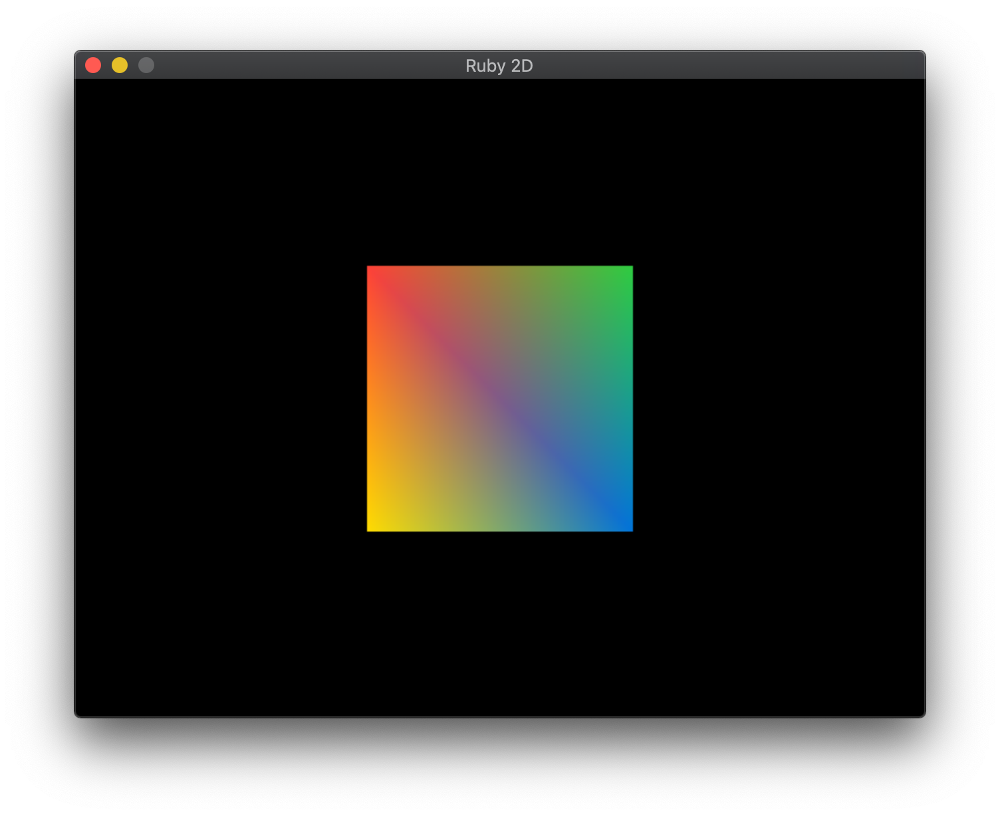
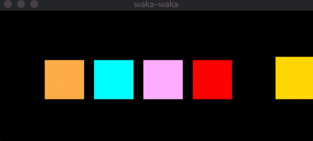
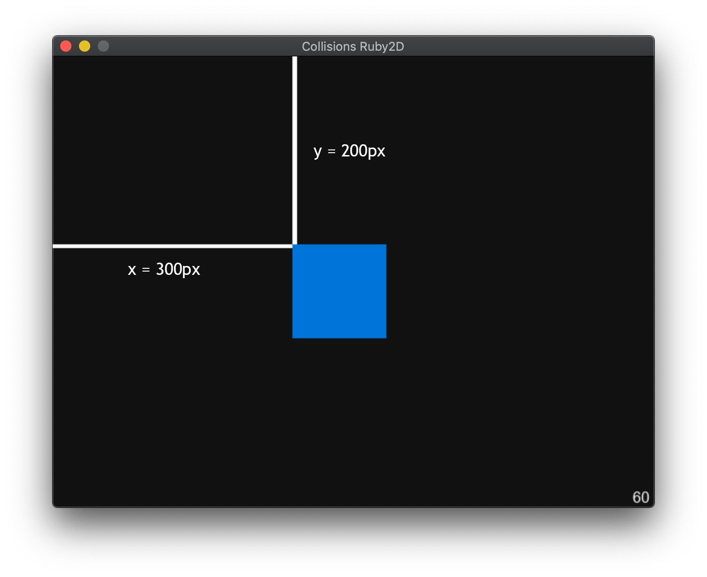
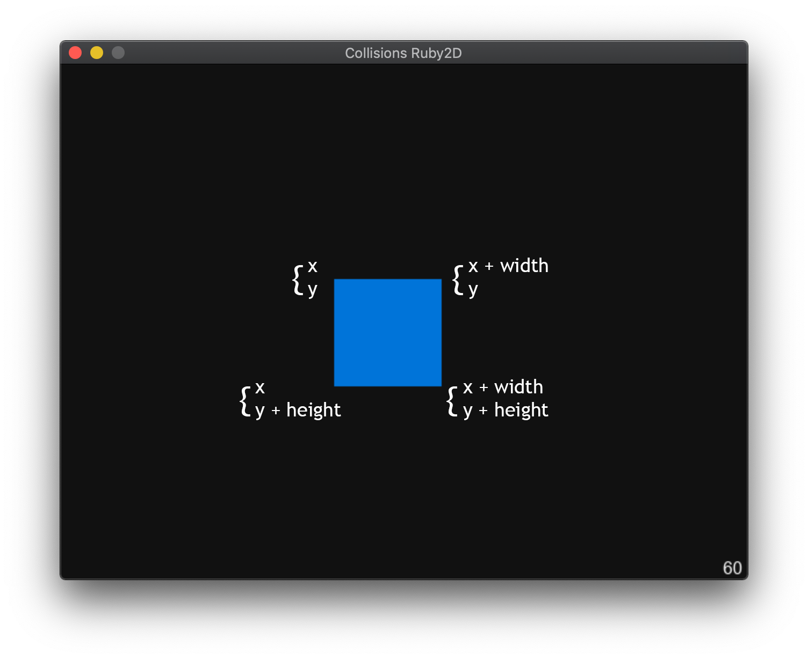
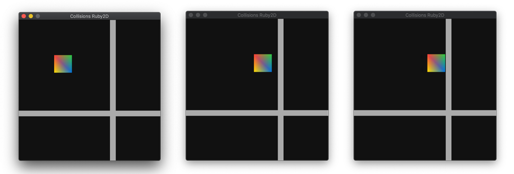

Ruby2D is a fantastically simple to use 2D graphical gem with minimal setup. With just a few lines of code we can prototype application interfaces and graphical visualizations. For instance, the code below supports a magnificent box.
require "ruby2d"
Square.new(
x: Window.width / 2 - 100,
y: Window.height / 2 - 100,
size: 200,
color: ["red", "green", "blue", "yellow"],
)
Window.show

Ruby2D also advertises itself as a gem for creating games. It has seamless support for controller/keyboard input interactions with just a few lines of code. However, "game engine"-like implementation is bare and many of the methods we might want to see in a game-gem are not implemented.
Then, even if users can move objects around with their keyboards, Ruby2D does not supplies us with convienient methods for checking object-to-object interactions.
Without these interactions, Pac-Man could not:
Although not being able to lose the game is great, being an immortal yellow entity in a useless maze with no win condition is arguably worse.

In order to motivate collision handling, we are going to deal with player interaction with a block wall. Ideally, I would like my code to emulate the following:
if(!player.collides_with?(wall))
player.move(x, y)
end
That is, if our player is not interacting with the wall, have the player move freely. However if the player is interacting with the wall, disallow the player to move through it.
Since Ruby2D does not supply us with any of these methods, besides the
update funciton, we have to create all of them from scratch. For the
sake of brevity, we are only going to deal with the
collides_with? method. We want this method to return
true when two objects are overlapping and
false when they are not.
Unfortunately, Ruby2D does not give us all the information we want natively. Although, we can calculate the space the two objects occupy and compare if they overlap.
In order to do so, we are provided with the location, height and width
of any object on the screen. We can leverage that to check if an
object's area is inside another object's area. The only hiccup will be
understanding what the
.x and .y methods return.
Typically in graphics we have to deal with
(x,y) coordinates to specify the location of objects.
Canonically, we deal with these coordinates as a pair.
So in our case, x represents the perpendicular distance
from the left border of the window to the left border of the object and
similarly, y represents the perpendicular distance from the
top border of the window to the top border of the object. (Notice that
y is measuring the distance from the top instead of the
bottom like we might be used to.)
Then the point given by (x,y) will be the top left corner
of our object.

In order to find the four corners of this object we can use quick maths involving the location, width and height.
#The point class takes in an x,y cordinate.
player.corners[0]=Point.new(x , y )
player.corners[1]=Point.new(x + width, y )
player.corners[2]=Point.new(x , y + height)
player.corners[3]=Point.new(x + width, y + height)

This will just give us the corners of any rectangle. If we wanted the corners of more complicated objects, more complex math would be required.
Now we can check if any point is within another rectangle by checking if a point is in the area created by it.
#Is point.x between the two x points given by the rectangle?
(pt.x > rect.x && pt.x < rect.x + rect.width) &&
#And is the point.y between the two y points?
(pt.y > rect.y && pt.y < rect.y + rect.height)
Now we can check if the box is in the wall by iterating through the points.
player.corners.any? do |pt|
(pt.x > rect.x && pt.x < rect.x + rect.width) &&
(pt.y > rect.y && pt.y < rect.y + rect.height)
end
The above code will give us true if the player is in the wall and false if the player is not. Finally we can wrap the above in a method and have our collision detection.
def collides_with?(rect)
self.corners.any? do |pt|
(pt.x > rect.x && pt.x < rect.x + rect.width) &&
(pt.y > rect.y && pt.y < rect.y + rect.height)
end
end
So now we can prevent players going through walls.

Instead of letting them pass..

Understandably, this is a very basic approach to collision detection. However, it is a great first step into programming game-engine features.
It was also a fantastic way to play around with Ruby2D and see the limitations and stengths.
If you want to learn more about Ruby2D I highly recommend visiting their website.
If you want to learn more about Ruby game engines and game development, check out bigger ruby projects that are more focused on gaming such as Gosu.
And if you have any questions for me, feel free to shoot me an email below.